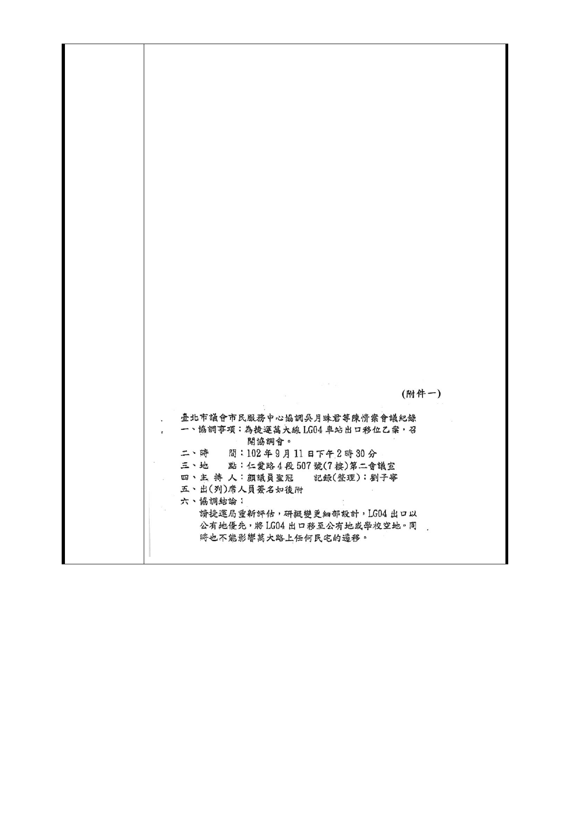

，建議位置如附圖（附件四），即不會影響沿線任何民宅，無
需拆遷。
三、LG04 車站應優先使用公有土地、空地、學校用地：
（一）LG04 車站附近已有大面積之公有土地、空地（天主教
玫瑰堂前空地）、學校用地（東園國小、萬大國小），依法應
優先使用。
（二）LG04 車站捷運機房設施則應設置於東園國小及萬大國
小之公共設施多目標使用開發用地，即無需再加長加寬、開
挖即無需再加深。
四、捷運局於 102 年 9 月 23 日函覆（附件五），稱本次協調
會議結論與前述訴求，將納入研析評估，並會再提請鈞會及
貴委員等討論，敬請鈞會督促捷運局務必確實進行評估並提
出報告，並懇請貴委員等明鑒，維護人民權益。
附件一：102 年 9 月 11 日協調會議記錄
附件二：LG04 站捷八替代方案技術問題解決建議
附件三：捷運板南線亞東醫院站－海山站間中央避車線圖
附件四：捷運萬大線 LG03 站－LG04 站間中央避車線建議位
置圖
附件五：臺北市政府捷運工程局 102 年 9 月 23 日北市捷規字
第 10232954300 號函
- 153 -